CATHEDRA
Estudiá desde lo que dijo el profesor.
Windows 10 u 11 · 64 bits
01 · Empezás
Empezás con tu cronograma.
Soltás el cronograma de cada materia (PDF, Word, una foto o texto) y Cathedra arma tus materias y tus clases: los días y el horario, los docentes, las fechas de cada clase y de cada parcial. Lo que el cronograma no dice queda marcado; no se inventa.
Probalo: arrastrá el cronograma de ejemplo
Soltá acá tus cronogramas
o tocá el archivo para usarlo
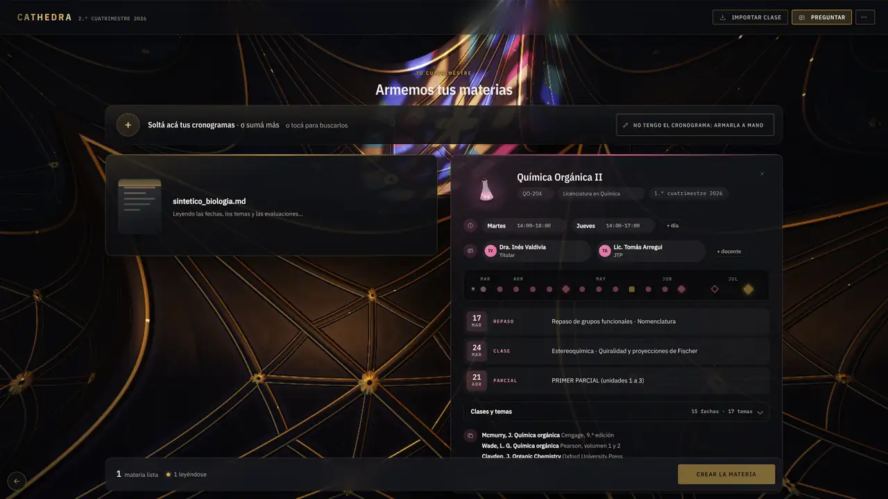
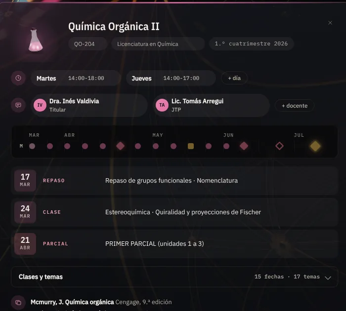
02 · Subís
Subís la clase.
Soltás el audio o el video de la clase sobre la ventana, o tocás «Importar clase». Si le das permiso, mira tu carpeta de descargas: cuando aparece una clase grabada la transcribe sola y la guarda en la materia que corresponde. El material de la cátedra (PDF, Word, PowerPoint) va a su materia.
- Transcribe en tu computadora, con el módulo que bajás una sola vez: rápido, o preciso para nombres propios y aulas ruidosas.
- Te dice cuánto falta: «transcribiendo: va por el minuto 40 de 112 · faltan unos 9 minutos».
- Sin conexión también transcribe.
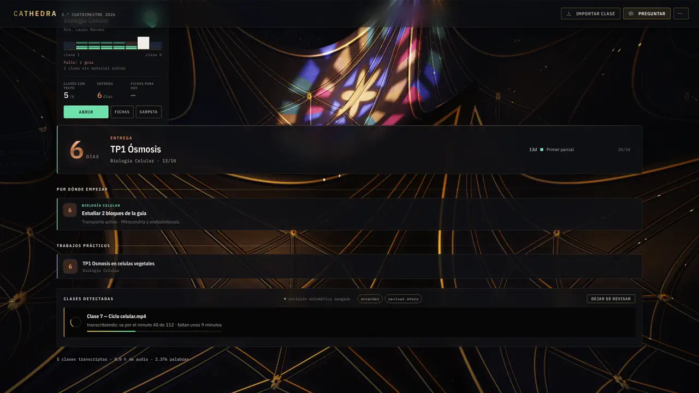
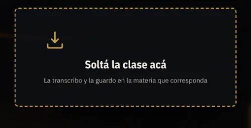
03 · La lee
Cathedra la lee y arma la guía.
De la clase cruda saca la guía por clase y por tema. Separa lo que es contenido de lo que dijo sobre el examen, sobre el práctico o sobre la cursada, y marca lo que el profesor dijo que toma. Cada bloque guarda la frase y el minuto en que se dijo.
Clase 4 — Mitocondria y respiración celular
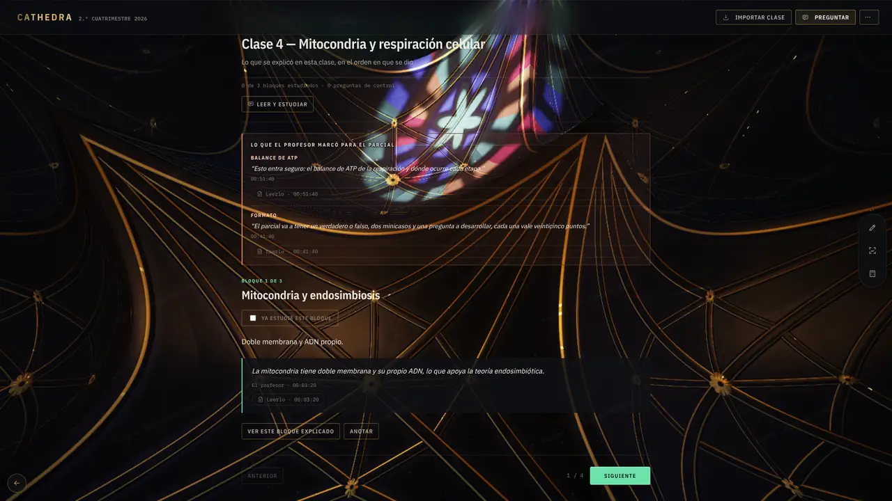
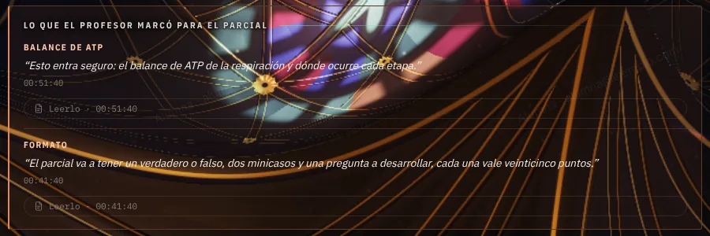
04 · Preguntás
Preguntás, y te contesta con la clase y el minuto.
Le preguntás como a un compañero que tomó todos los apuntes. Contesta desde lo que dijo el profesor y te muestra cómo lo dijo, de qué clase sale y desde qué minuto leerlo o escucharlo. Si suma un ejemplo propio, te avisa que no lo dijo el profesor.
Por chat, en cualquier pantalla. Por voz (habla y escucha), con el plan Premium.
Tocá una pregunta
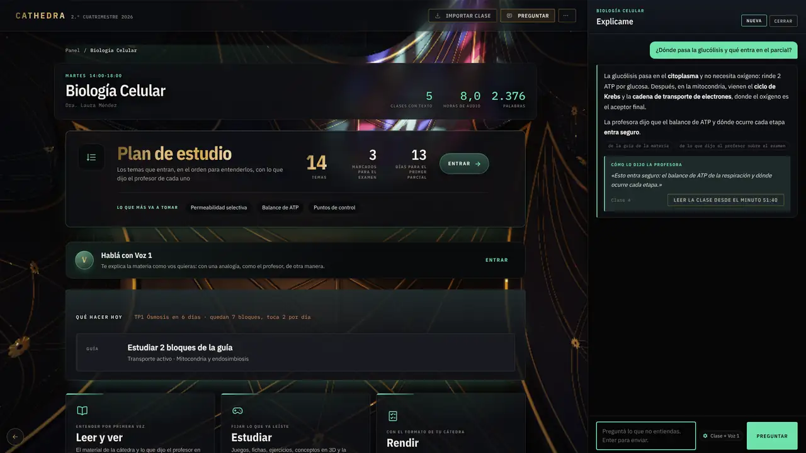
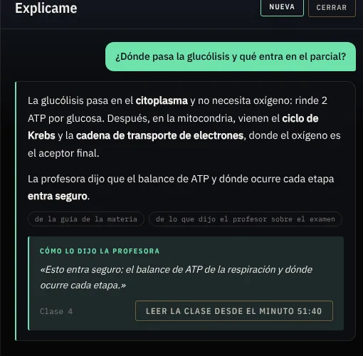
05 · Rendís
Te toma un simulacro con el formato que anunció.
Si el profesor dijo «un verdadero o falso, dos minicasos y una a desarrollar, veinticinco puntos cada una», el simulacro sale así, y con lo que dijo que toma. Lo corrige con lo que se dio en clase, te pone la nota y te dice qué no dijiste y de dónde sale cada consigna.
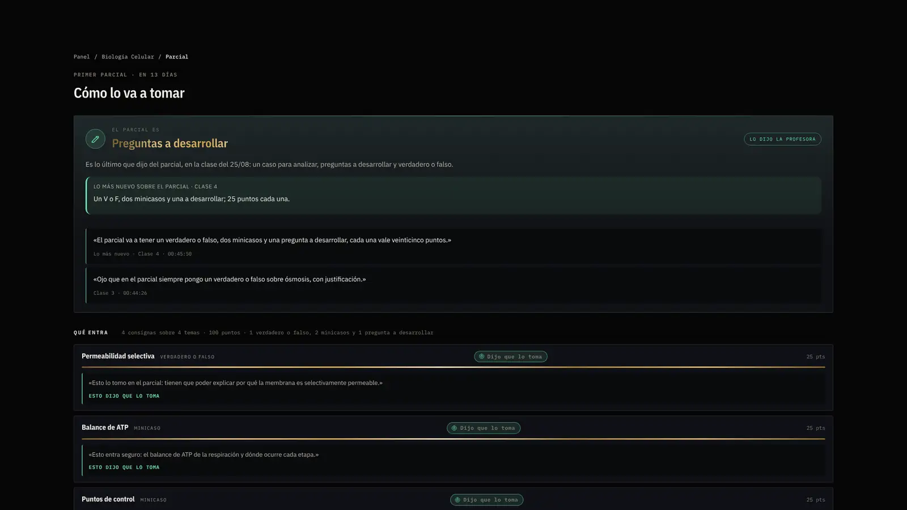
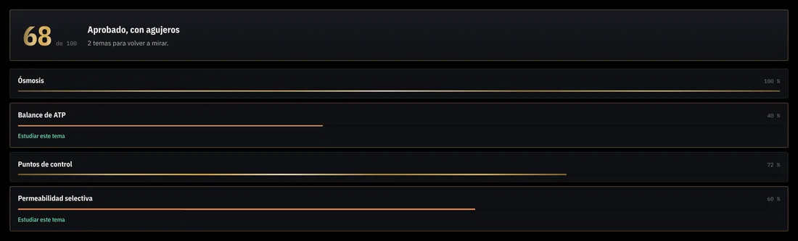
06 · Repasás
Repasás lo que te costó, y «Hoy» te dice qué estudiar.
Lo que erraste en el simulacro, en los juegos o en las fichas va a tu mazo de repaso, con la página de donde sale, y vuelve cuando toca. Al abrir, «Por dónde empezar» te da una tarea por materia, ordenada por los días que faltan para cada examen; «Cuánto por día» reparte lo que falta entre todas.
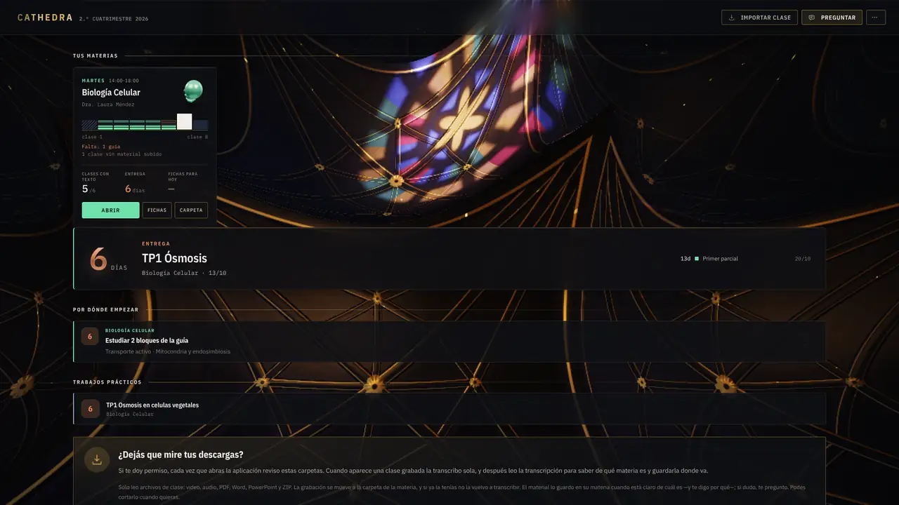
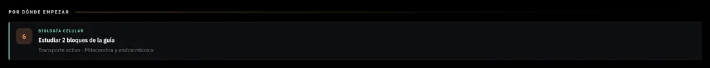
Y todo lo demás
Lo que también hace.
Cada tarjeta es una pantalla de Cathedra. Tocala para verla entera.
Para Windows
Bajala y empezá por la próxima clase.
Descargar para Windows- Sistema
- Windows 10 u 11 · 64 bits
- Espacio
- Unos 2 GB libres
- La primera vez
- Desde Ajustes › Módulos bajás la transcripción una sola vez y te muestra cuánto falta. Después, ya podés subir tus clases.
Como todavía no está firmada, Windows muestra un aviso azul: tocá «Más información» y después «Ejecutar de todas formas».
-
Windows protegió tu PC Más información No ejecutar
-
Windows protegió tu PC Aplicación: Cathedra-Setup.exe Editor: Editor desconocido Ejecutar de todas formasNo ejecutar
Si te invitaron, pegá tu código en Ajustes › Motor.